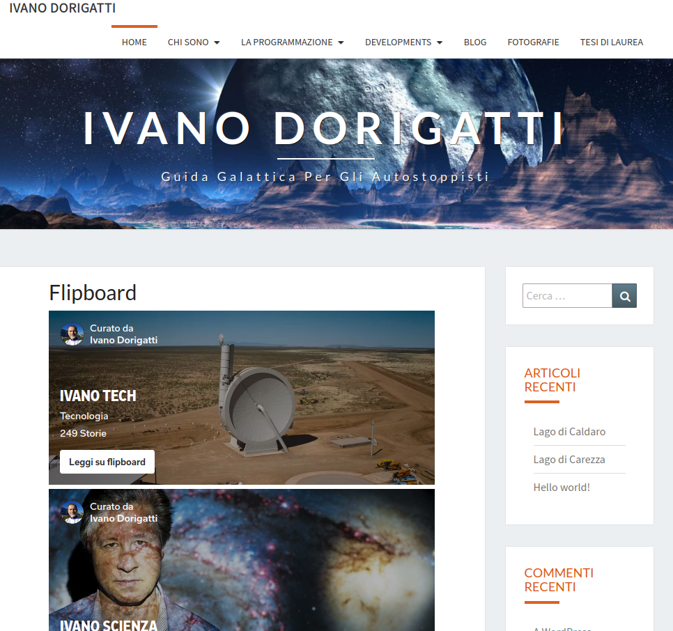
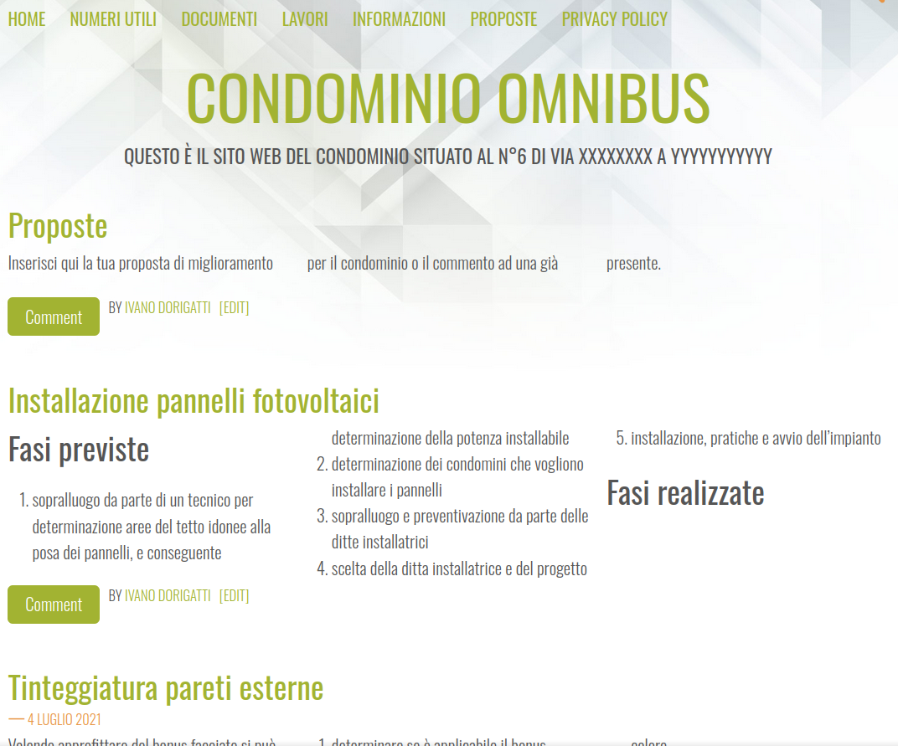

Siti web dinamici - Sito Web Personale e Sito Web per il Condominio con Wordpress e PHP
Benvenuti nel Mio Mondo Online
Ivano Dorigatti

In questo spazio digitale, ho riunito le mie competenze lavorative e i miei interessi personali per offrire una panoramica completa della mia identità. Sono un appassionato programmatore con esperienza ultraventennale nello sviluppo di applicazioni software, un creativo nella progettazione di soluzioni web e un fervente sostenitore dell'apprendimento continuo.
Competenze Lavorative
-
Programmazione.
Esperienza ventennale nello sviluppo di applicazioni software in linguaggi come AutoLisp, Visual Basic 6, VBA for Application e da qualche anno in C#. Ho contribuito allo sviluppo di progetti in vari settori, dall'automazione industriale alla finanza personale.
-
Sviluppo Web.
Competenze nello sviluppo di siti web interattivi utilizzando Wordpress, HP, HTML, CSS e JavaScript. Ho realizzato progetti di siti web aziendali, personali e informativi.
-
Automazione Processi.
Ho creato applicativi per l'automazione di processi aziendali, ottimizzando flussi di lavoro e migliorando l'efficienza operativa.
-
Linguaggi di Scripting.
Conoscenza di linguaggi di scripting come Python per l'automazione di compiti e l'analisi dei dati.
Interessi Personali
-
Apprendimento Continuo.
Sono appassionato di nuove tecnologie e linguaggi di programmazione. L'apprendimento costante è la mia chiave per rimanere aggiornato e affrontare nuove sfide.
-
Progettazione Creativa.
Amo creare soluzioni esteticamente accattivanti. Sperimento con il design grafico, l'usabilità e l'esperienza utente per rendere le mie applicazioni e i siti web non solo funzionali, ma anche visivamente attraenti.
-
Divulgazione e Condivisione.
Credo nell'importanza di condividere conoscenza. Scrivo articoli e tutorial su programmazione e tecnologia, contribuendo alla comunità online e supportando l'apprendimento degli altri.
Benvenuti nel Portale del Condominio
Condominio Omnibus

Il portale Condominio Omnibus (password "Omnibus") è dedicato alla comunicazione, alle informazioni e alla gestione del flusso di lavori ordinari e straordinari sulle parti comuni del Condominio Omnibus. Attraverso questo spazio digitale, garantiamo un canale di comunicazione diretto e organizzato per tutti i condomini.
Caratteristiche Principali
-
Comunicazioni Efficaci.
Il portale fornisce un'area dedicata alle comunicazioni importanti, garantendo che i messaggi e le informazioni raggiungano tutti i condomini in modo tempestivo ed efficiente.
-
Flusso Lavori.
Gli interventi ordinari e straordinari sulle parti comuni possono essere gestiti attraverso il portale. I condomini possono richiedere interventi, monitorarne lo stato e visualizzare gli aggiornamenti.
-
Blog dei Condomini.
Il portale include un blog esclusivo per i condomini, dove possono condividere notizie, idee e commenti in un ambiente riservato.
-
Accesso Sicuro.
Per garantire la riservatezza delle informazioni, l'accesso al portale è protetto da una password. Solo i condomini autorizzati possono accedere e partecipare.
Un Ponte tra Condomini e Gestione
Questo portale rappresenta uno strumento fondamentale per creare un legame solido tra i condomini e la gestione del condominio. La trasparenza delle informazioni, la gestione efficiente dei lavori e l'area di comunicazione riservata contribuiscono a creare un ambiente armonioso all'interno della Residenza XYZ.
Conclusioni
Sia il mio sito web personale che il portale del condominio rappresentano la mia dedizione nell'applicare le competenze tecniche per creare soluzioni pratiche e funzionali. Nel mio sito personale, unisco competenze lavorative e interessi personali, mentre nel portale del condominio, ho creato uno spazio digitale che migliora la comunicazione e semplifica la gestione delle parti comuni. La passione per la programmazione e il design si traduce in soluzioni che rispondono alle esigenze sia personali che comunitarie.
Precedente: Siti web dinamici - Realizzazione di un Sito Web Aziendale con WordPress e PHP
Successivo: Siti Web Statici - Sito Web Personale in Blogger